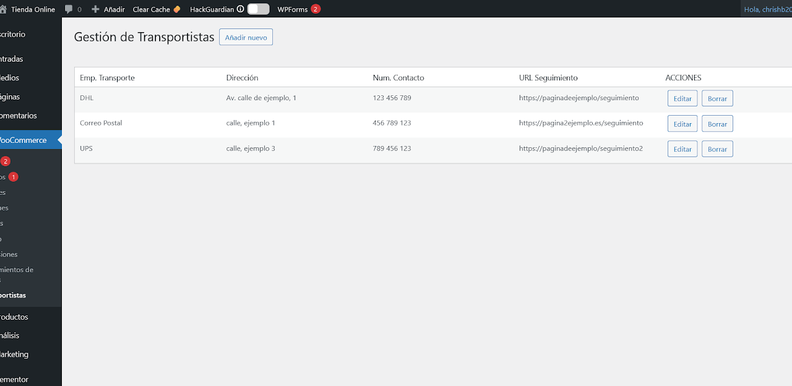
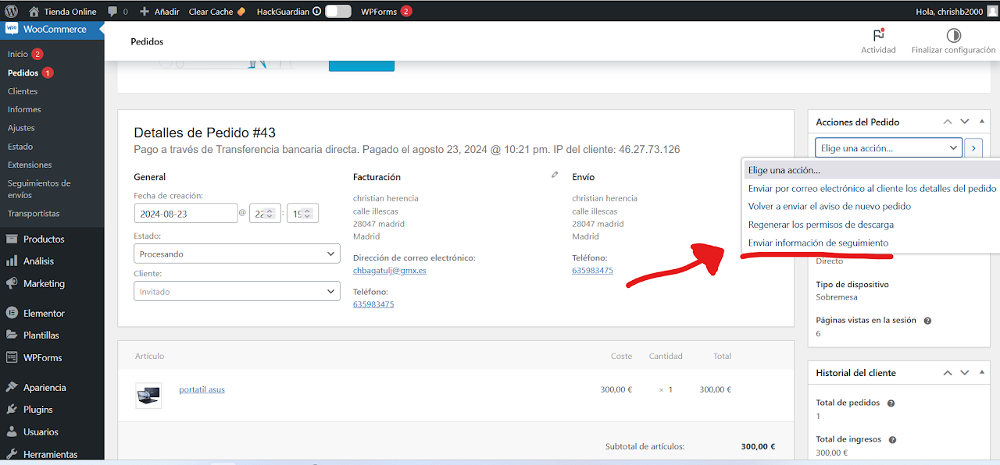

Tracking envió - Plugin WordPress compatible con WooCommerce
WooCommerce Tracking envió versión 1.0
Es plugin muy útil en la gestión de envió de correo a clientes sobre el seguimiento de su pedido. Incluye un listado para agregar las empresas de transportes y realizar los envíos correspondientes a clientes por email.
La vista diseño es adaptable a dispositivos móviles.
$ 14.99 Dólares

INSTRUCCIONES:
Una ver realizado el pago le llegara la descarga automáticamente por google Drive y las instrucciones de la instalación es muy sencilla, deberá entrar en su plataforma de WordPress modo administrador y en la sección de Plugins y administrador de Plugins, le dará al botón AÑADIR NUEVO PLUGIN, luego SUBIR PLIGIN, he insertaras el plugin comprado y automáticamente, una vez instalado le tendrá que dar a ACTIVAR para que dicho plugin empiece a funcionar.
Una vez instalado el plugin, el primer paso es agregar las Empresas de transporte que desee, luego simplemente en el resumen de pedido, en la ACCIONES, usted podrá seleccionar el envió de seguimiento URL al cliente y se va a redirigir a una pagina donde podrá seleccionar la empresa de transporte y ademas el numero de referencia que la empresa de transporte le proporcione, luego le dará al botón de enviar información de seguimiento y automáticamente se creara un registro y un envió de correo al cliente. Puede revisar el video para el procedimiento y si tiene alguna duda nos puede comunicar la consulta.
Nota: Si tuviera algún problema con la instalación, le brindamos el soporte gratuito. Contacte con nosotros para cualquier duda y estaremos encantados de ayudarle. Email: chrishb2000@gmail.com
Más imagenes
